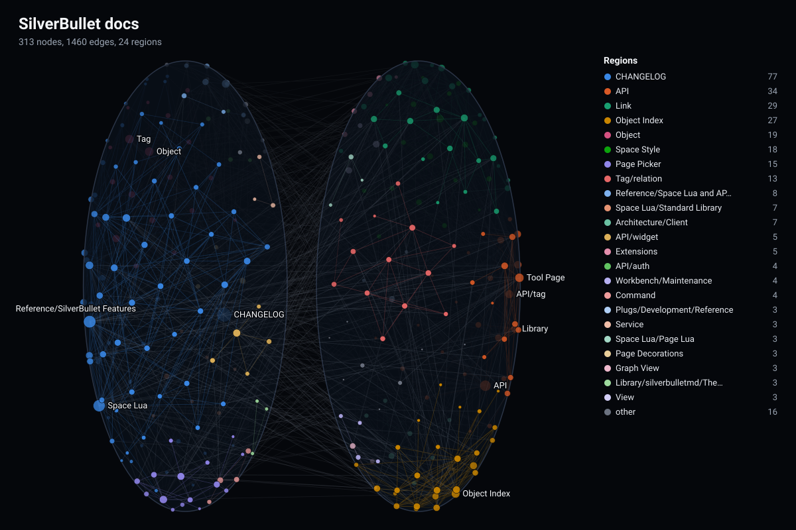

neurophify draws a knowledge graph as a 3D brain. The demo shows the documentation of SilverBullet: 313 pages, 1460 links, 24 regions.
Open the interactive 3D demo

Demo data: the docs/ folder of SilverBullet, MIT license, Copyright 2022 Zef Hemel.
docs/